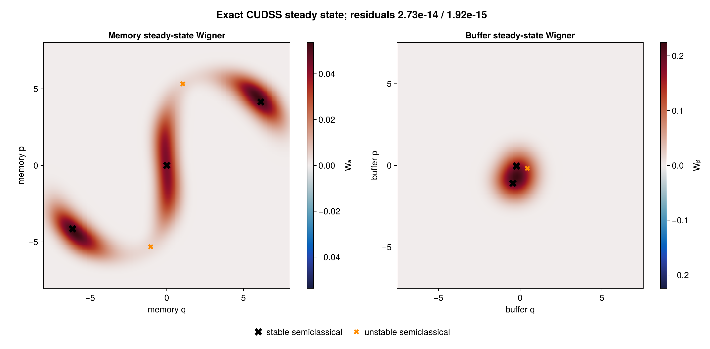
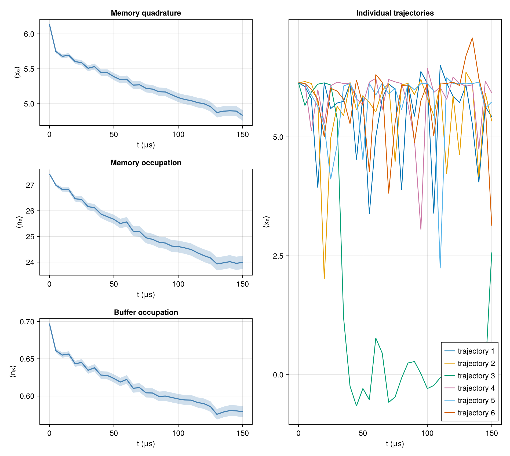
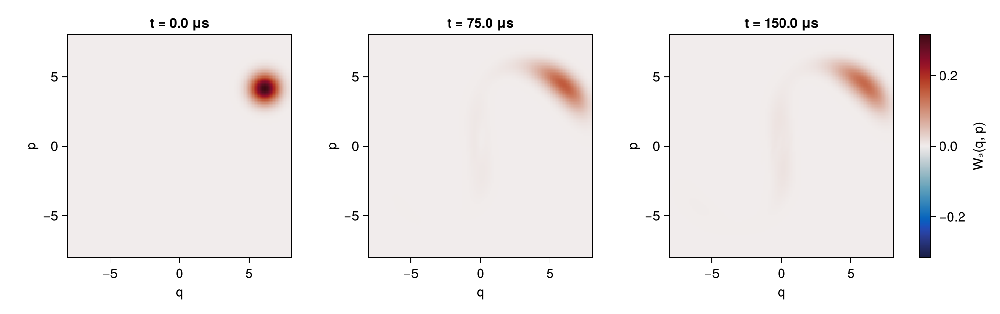
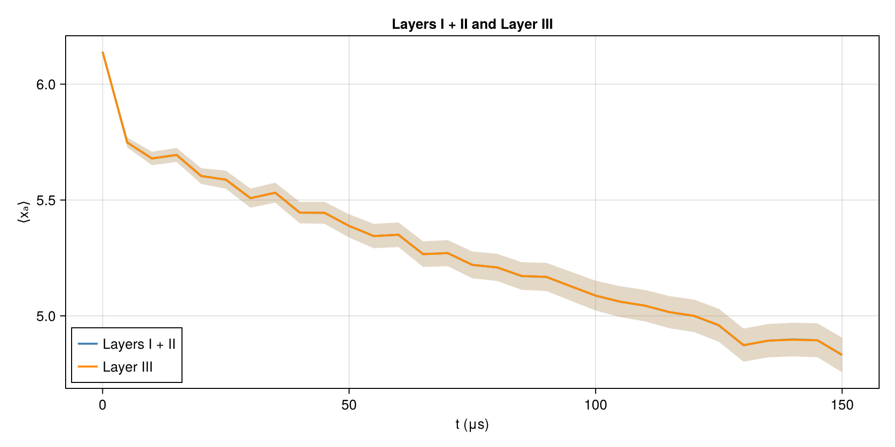

Two-mode detuned cat
Here we consider a realistic example of a two-mode parametrically coupled driven-dissipative system, including non-linearities and detuning terms. The Hamiltonian and collapse-operator conventions follow Section 5.2 of the paper.
Run the code blocks in order in one Julia session, starting from the repository root. See Running the examples for the environment setup.
- Prepare the environment
- Load the packages and steady-state helper
- Detuned memory-buffer model
- Semiclassical gauges
- Exact steady-state Wigner functions
- Layers I and II
- Memory-mode Wigner snapshots
- Layer III
Prepare the environment
import Pkg
repo_root = pwd() # Start Julia from the repository root.
examples_dir = joinpath(repo_root, "examples")
Pkg.activate(examples_dir)
Pkg.develop(Pkg.PackageSpec(path=repo_root))
Pkg.instantiate()Load the packages and steady-state helper
Before running this page, install the additional helper dependencies listed under Detuned-cat dependencies. The helper is included from the example environment created above.
using CairoMakie
using DiSLOUTrajectories
using LinearAlgebra
using Printf
using QuantumToolbox
import QuantumCumulants
include(joinpath(examples_dir, "exact_steady_state.jl"))
using .ExactSteadyState: exact_steadystate, semiclassical_fixed_points
const QUICK = false
const CF = ComplexF64ComplexF64[90m (alias for [39m[90mComplex{Float64}[39m[90m)[39mDetuned memory-buffer model
The Hamiltonian follows Eq. (24), with $n_a=a^\dagger a$, $n_b=b^\dagger b$, and real $\varepsilon_b$. This example uses its own numerical parameters and Fock cutoffs $N_a=65$, $N_b=14$, which differ from Section 5.2; setting QUICK=true uses smaller cutoffs.
\[H=\Delta_a n_a+\Delta_b n_b-\frac{K_a}{2} a^{\dagger2}a^2-\frac{K_b}{2} b^{\dagger2}b^2-\frac{\chi}{2} n_an_b+g_2(a^2b^\dagger+a^{\dagger2}b)+\varepsilon_b(b+b^\dagger).\]
The loss channels are $C_1=\sqrt{\kappa_1}a$ and $C_b=\sqrt{\kappa_b}b$ (Eq. 25), with $\kappa_\phi=0$. The code's cfg.κa denotes the memory loss rate $\kappa_1$.
full_dims = (65, 14)
Na, Nb = QUICK ? (12, 5) : full_dims
cfg = (;
Na, Nb,
Δa=-0.5, Δb=41.0,
Ka=-0.1, Kb=-1.5, χ=-0.75,
g2=1.5, εb=6.8 + 0im,
κa=5e-3, κb=15.0,
)
# H (Eq. 24).
function hamiltonian(a, b)
na, nb = a' * a, b' * b
H = cfg.Δa * na + cfg.Δb * nb
H += -cfg.Ka / 2 * (a'^2 * a^2)
H += -cfg.Kb / 2 * (b'^2 * b^2)
H += -cfg.χ / 2 * na * nb
H += cfg.g2 * (a^2 * b' + a'^2 * b)
H += cfg.εb * (b + b')
H
end
# C₁, C_b (Eq. 25); cfg.κa denotes κ₁.
collapse_operators(a, b) = [sqrt(cfg.κa) * a, sqrt(cfg.κb) * b]
a = tensor(destroy(Na), qeye(Nb))
b = tensor(qeye(Na), destroy(Nb))
na, nb = a' * a, b' * b
xa = (a + a') / sqrt(2)
H = hamiltonian(a, b)
c_ops = collapse_operators(a, b)
@assert size(H.data) == (Na * Nb, Na * Nb)
(; Na, Nb, dimension=Na * Nb)(Na = 65, Nb = 14, dimension = 910)Semiclassical gauges
The symbolic mean-field equations have five fixed points: three stable centers $(\alpha_g,\beta_g)$ defining $\zeta_\mu^{(g)}$ through Eq. (A.6) and two unstable saddles.
semiclassical_limits = (full_dims[1] - 1, full_dims[2] - 1)
gauge_limits = QUICK ? (Na - 1, Nb - 1) : semiclassical_limits
semiclassical = semiclassical_fixed_points(
hamiltonian, collapse_operators; limits=semiclassical_limits)
sc = discover_gauges(
hamiltonian,
collapse_operators;
method=:semiclassical,
limits=gauge_limits,
)
nstable = count(point -> point.stable, semiclassical)
nunstable = length(semiclassical) - nstable
stable_points = filter(point -> point.stable, semiclassical)
stable_branches = sort(stable_points; by=point -> (abs2(point.b), real(point.a)))
branch_centers = CF[getproperty(point, field) for field in (:a, :b), point in stable_branches]
(; fixed_points=length(semiclassical), stable=nstable, gauges=size(sc.centers, 2))(fixed_points = 5, stable = 3, gauges = 3)Exact steady-state Wigner functions
The stationary density matrix $\rho_{\rm ss}$, satisfying $\dot\rho=0$ in Eq. (1) and $\operatorname{Tr}\rho_{\rm ss}=1$, is obtained directly from Liouvillian. Black crosses mark stable semiclassical solutions and orange crosses mark unstable ones.
ss = exact_steadystate(H, c_ops; mode_dims=(Na, Nb), parity_mode=1)
ρss = ss.state
ρa_ss, ρb_ss = ptrace(ρss, 1), ptrace(ρss, 2)
grid_points = QUICK ? 41 : 241
qa = collect(range(-8.0, 8.0; length=grid_points))
pa = copy(qa)
qb = collect(range(-7.5, 7.5; length=grid_points))
pb = copy(qb)
Wa_ss = permutedims(wigner(ρa_ss, qa, pa))
Wb_ss = permutedims(wigner(ρb_ss, qb, pb))
# α_g or β_g, deduplicated for plotting.
function projected_amplitudes(points, field, stable; tol=1e-7)
values = ComplexF64[]
for point in points
point.stable == stable || continue
value = getproperty(point, field)
all(abs(value - previous) > tol for previous in values) && push!(values, value)
end
values
end
function wigner_panel!(layout, xs, ys, W, points, field, title, label)
ax = Axis(layout[1, 1]; xlabel=field === :a ? "memory q" : "buffer q",
ylabel=field === :a ? "memory p" : "buffer p", aspect=DataAspect(), title)
scale = max(maximum(abs, W), 1e-12)
hm = heatmap!(ax, xs, ys, W; colormap=:balance, colorrange=(-scale, scale))
stable = projected_amplitudes(points, field, true)
unstable = projected_amplitudes(points, field, false)
scatter!(ax, sqrt(2) .* real.(stable), sqrt(2) .* imag.(stable);
marker=:xcross, markersize=20, color=:black)
scatter!(ax, sqrt(2) .* real.(unstable), sqrt(2) .* imag.(unstable);
marker=:xcross, markersize=14, color=:darkorange)
Colorbar(layout[1, 2], hm; label)
end
fig_steady_state_wigner = Figure(size=(1320, 650), fontsize=16)
wigner_panel!(fig_steady_state_wigner[1, 1:2], qa, pa, Wa_ss, semiclassical, :a,
"Memory steady-state Wigner", "Wₐ")
wigner_panel!(fig_steady_state_wigner[1, 3:4], qb, pb, Wb_ss, semiclassical, :b,
"Buffer steady-state Wigner", "Wᵦ")
Legend(fig_steady_state_wigner[2, 1:4],
[MarkerElement(marker=:xcross, markersize=20, color=:black),
MarkerElement(marker=:xcross, markersize=14, color=:darkorange)],
["stable semiclassical", "unstable semiclassical"];
orientation=:horizontal, framevisible=false)
Label(fig_steady_state_wigner[0, 1:4], @sprintf(
"Exact %s steady state; residuals %.2e / %.2e", uppercase(String(ss.backend)),
ss.diagnostics.scaled_relative_residual,
ss.diagnostics.relative_liouvillian_residual); fontsize=19, font=:bold)
fig_steady_state_wigner
Layers I and II
Start in the positive-memory high branch and evolve the memory quadrature and both occupations using the three semiclassical gauges.
αplus, βplus = branch_centers[:, 3]
ψ0 = tensor(coherent(Na, αplus), coherent(Nb, βplus))
tlist = QUICK ? [0.0, 0.5, 1.0] : collect(0.0:5.0:150.0)
snapshot_times = QUICK ? [0.0, 0.5, 1.0] : [0.0, 75.0, 150.0]
ntraj = QUICK ? 4 : 1024
ensemble_seed = 20260831
sol = dislou_solve(
H,
ψ0,
tlist,
c_ops;
e_ops=[xa, na, nb],
gauge_set=sc,
ntraj,
ensemblealg=:threads,
seed=ensemble_seed,
saveat=snapshot_times,
save_trajectories=true,
)DiSLOUSolution(ntraj=1024, Ne=3, Nt=31, total_jumps=175830)Read the observables
Plot the memory quadrature and both occupations with standard-error bands, alongside six individual memory-quadrature trajectories.
observable_mean = real.(sol.expect)
observable_sem = sol.expect_sem
fig_observables = Figure(size=(950, 850))
labels = ["⟨xₐ⟩", "⟨nₐ⟩", "⟨nᵦ⟩"]
titles = ["Memory quadrature", "Memory occupation", "Buffer occupation"]
for observable in 1:3
ax = Axis(fig_observables[observable, 1]; xlabel="t (μs)",
ylabel=labels[observable], title=titles[observable])
band!(ax, tlist, observable_mean[observable, :] .- observable_sem[observable, :],
observable_mean[observable, :] .+ observable_sem[observable, :];
color=(:steelblue, 0.25))
lines!(ax, tlist, observable_mean[observable, :]; color=:steelblue, linewidth=2)
end
ax_trajectories = Axis(fig_observables[1:3, 2]; xlabel="t (μs)", ylabel="⟨xₐ⟩",
title="Individual trajectories")
for trajectory in 1:min(6, ntraj)
lines!(ax_trajectories, tlist, real.(sol.trajectory_expect[1, trajectory, :]);
label="trajectory $trajectory")
end
axislegend(ax_trajectories; position=:rb)
fig_observables
Memory-mode Wigner snapshots
Trace out the buffer from the saved ensemble density matrices and compare the memory Wigner function at the initial, intermediate, and final times.
xvec = collect(range(-8.0, 8.0; length=QUICK ? 41 : 161))
yvec = copy(xvec)
memory_states = [ptrace(state, 1) for state in sol.states]
wigner_values = [permutedims(wigner(state, xvec, yvec)) for state in memory_states]
color_limit = maximum(maximum(abs, W) for W in wigner_values)
fig_wigner = Figure(size=(1050, 330))
heatmaps = Any[]
for (column, time, W) in zip(1:3, snapshot_times, wigner_values)
ax = Axis(fig_wigner[1, column]; xlabel="q", ylabel="p",
title="t = $time μs", aspect=DataAspect())
push!(heatmaps, heatmap!(ax, xvec, yvec, W; colormap=:balance,
colorrange=(-color_limit, color_limit)))
end
Colorbar(fig_wigner[1, 4], first(heatmaps); label="Wₐ(q, p)")
fig_wigner
Layer III
Use $m^{(l)}=200$ and $m^{(\pm)}=400$ with residual tolerance $r_{\rm tol}=10^{-4}$ (Eq. 21); QUICK uses 20 slow modes per gauge.
layer3_sizes = QUICK ? fill(20, size(sc.centers, 2)) : [200, 400, 400]
layer3_sol = dislou_solve(
H,
ψ0,
tlist,
c_ops;
e_ops=[xa, na, nb],
gauge_set=sc,
ntraj,
ensemblealg=:threads,
seed=ensemble_seed,
layer3=true,
layer3_sizes,
residual_tolerance=1e-4,
)DiSLOUSolution(ntraj=1024, Ne=3, Nt=31, total_jumps=175835)Overlay the memory-quadrature means and standard-error bands from the full-space and reduced runs. The steady-state Wigner calculation above is a stationary reference, while this plot compares two trajectory evolutions.
layer3_mean = real.(layer3_sol.expect)
layer3_sem = layer3_sol.expect_sem
fig_validation = Figure(size=(900, 450))
ax_validation = Axis(fig_validation[1, 1]; xlabel="t (μs)", ylabel="⟨xₐ⟩",
title="Layers I + II and Layer III")
band!(ax_validation, tlist, observable_mean[1, :] .- observable_sem[1, :],
observable_mean[1, :] .+ observable_sem[1, :]; color=(:steelblue, 0.18))
band!(ax_validation, tlist, layer3_mean[1, :] .- layer3_sem[1, :],
layer3_mean[1, :] .+ layer3_sem[1, :]; color=(:darkorange, 0.18))
lines!(ax_validation, tlist, observable_mean[1, :]; color=:steelblue, linewidth=2,
label="Layers I + II")
lines!(ax_validation, tlist, layer3_mean[1, :]; color=:darkorange, linewidth=2,
label="Layer III")
axislegend(ax_validation; position=:lb)
fig_validation